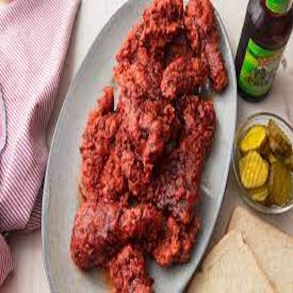

Nashville Tenders Recipe
<--- Go Back To Recipes

Description
Flavorful, fun and absolutely tasty these Nashville Hot Chicken Tenders
are a delicious lunch or dinner meal that will appeal to the spicier
crowd! They can be served may ways, chicken piece, chicken tenders,
shredded chicken, etc. We absolutely love making these Nashville Hot
Chicken Tenders.
Ingredients
For the Tenders:
- 1 cup all-purpose flour
- 1 teaspoon baking powder
- 1/2 teaspoon cayenne pepper
- 1/2 teaspoon garlic powder
- 1/2 teaspoon kosher salt
- 1/2 teaspoon black pepper
- 3/4 cup buttermilk
- 1 large egg
- 1 pound chicken ternderloins
For the Sauce:
- 1/4 cup unsalted butter
- 1 1/2 tablespoons light brown sugar [packed]
- 1/2 teaspoon cayenne pepper
- 1/2 teaspoon garlic powder
- 1/2 teaspoon onion powder
- 1/2 teaspoon kosher salt
- Oil for frying
Instructions
-
In a medium-sized bowl, add the flour, baking powder, cayenne, garlic
powder, salt, and pepper, whisk to combine, set aside.
-
In a medium-sized bowl, whisk together the buttermilk and the egg
until combined, set aside.
-
Start heating up your oil to 325°F. I like to use a dutch oven for
this. You can also use a deep fryer or a large skillet with deep
sides. You need about 3 inches of oil up the side of the pan. Make
sure you do not overfill the skillet if you are using it, when adding
the tenders the oil will rise.
-
While the oil heats, bread the tenders. Do this one tender at a time.
- Place tender into the flour mixture. Shake off any excess.
-
Place it into the buttermilk mixture and coat the tender well, let any
excess drip off.
-
Place it back into the flour mixture, coat the tender in the flour and
pat down the flour on the tender so it sticks well and forms a crust.
Shake off any excess flour.
-
Next, place the tenders very carefully into the hot oil. Fry for about
3-5 minutes per side, or until the internal temperature reaches 165°F.
Place the tenders on a wire rack above a sheet tray while you fry the
remaining tenders.
-
Add the butter into a small saucepan over medium-low heat. Let the
butter melt then add the brown sugar, cayenne, garlic powder, onion
powder, and salt.
-
Whisk to combine and continue to whisk until the sugar dissolves and
the sauce comes together for about 2 minutes.
- Brush the tenders with the sauce and serve.
<--- Go Back To Recipes